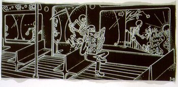
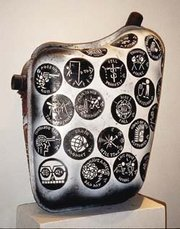
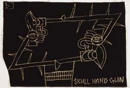
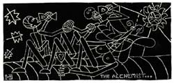

Anthony Dominguez
From The Giant: The Definitive Obey Giant Site
{kind=link}
Official bio from Dilettante Press:
Anthony Dominguez was born in Forth Worth, Texas, in 1960. At one time he maintained a home and held down a job as a sign painter, but now lives in abandoned buildings and makeshift structures. Rather than claiming that he is homeless, however, he considers himself free and has chosen this new way of life in order to divest himself of any attachment to worldly necessities. His earliest white-on-black works were drawn on black cloth using bleach from a clean needle program. In recent years he has worked on a larger scale, using white paint applied from a squeezable ketchup bottle. His signature is a stick figure opening a doorway marked by a heart, a symbol of his life as a constant state of becoming.
Dominguez and Shepard Fairey had a joint exhibit entitled Obey & Slay that took place at the Halsey Institute of Contemporary Art, College of Charleston in Charleston, South Carolina. It ran from October 5, 2001 to November 3, 2001.
Examples of the work of Anthony Dominguez:
|  |
 |
{kind=link}
{kind=link}
|  |
 |
{kind=link}
{kind=link}
© Copyright |
|---|
| This page contains an image or images of drawings, paintings, photographs, prints, or other two-dimensional works of art, for which the copyright is presumably owned by either the artist who produced the image, the person who commissioned the work, or the heirs thereof. It is believed that the use of low-resolution images of works of art for critical commentary on the work in question, the artistic genre or technique of the work of art, or the school to which the artist belongs on the English-language website thegiant.org, hosted on servers in the United States, qualifies as fair use under United States copyright law. |